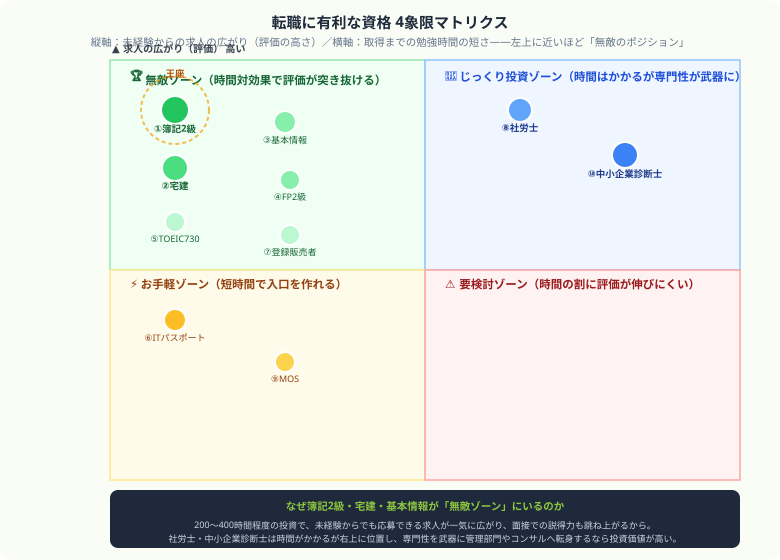

転職に有利な資格ランキング10選｜20代・30代のキャリアアップ向け【2026年版】
「今の職場のままで本当にいいんだろうか……」——ふとそんな不安が頭をよぎって、画面の前でフリーズしていませんか？僕は公認会計士試験に向けて、これまで3000時間以上を勉強に投資してきました。だからこそ断言できます。かけた時間と努力は、正しい武器を選べば最速でキャリアアップに変えて回収できるんです。この記事では、そんな僕の視点から、現状維持を抜け出すための【転職に本当に効く10資格】を熱くナビゲートします！最後まで読んで「これなら動けそう」と思えたら、記事の最後にある【いいねボタン】をポチッと押してもらえると、めちゃくちゃ励みになります！
その資格、単体で無双できる魔法だと思っていませんか？
転職で資格が有利になる人・ならない人
資格が特に効きやすいのは、未経験業界へ行きたい人、経験が浅くアピール材料が少ない人、応募条件に資格が明記されている業界を狙う人です。逆に、すでに十分な実務経験があり、資格より実績が強い人にとっては補助的な要素になりやすいです。
つまり、資格は「それだけで転職成功」ではなく、「応募できる求人を増やす」「学ぶ意思を示す」「最低限の知識を証明する」ためのものと考えると失敗しにくいです。
転職に有利な資格ランキングTOP10
日商簿記2級経理転職最強
勉強時間：200〜350時間｜活かしやすさ：非常に高い
経理、財務、会計、管理部門への転職では評価が高く、求人条件に入っていることも多い資格です。業界を問わず使えるため、転職市場での汎用性が非常に強いです。
宅地建物取引士（宅建）業界接続が強い
勉強時間：300〜400時間｜活かしやすさ：非常に高い
不動産業界への転職では極めて強い資格です。資格手当がある求人も多く、未経験からでも入口を作りやすいのが特徴です。不動産、建設、住宅営業を考える人に向いています。
基本情報技術者IT未経験向け
勉強時間：150〜200時間｜活かしやすさ：高い
ITエンジニアや社内SE、ITサポートなどを目指す人の入口資格です。ITパスポートより一段深く、未経験転職での学習意欲の証明として使いやすいです。
FP2級
勉強時間：150〜250時間｜活かしやすさ：高い
金融、保険、不動産、営業職で特に評価されやすい資格です。税金や保険、資産形成の知識は提案営業や顧客対応にも活きるため、転職先の幅を広げやすいです。
TOEIC 730点以上
勉強時間：現在地次第｜活かしやすさ：高い
外資系、メーカー、商社、IT、コンサルなどで英語力は明確な差別化になります。特に700点台後半からは「業務で英語に抵抗がない人材」と見られやすくなります。
ITパスポート
勉強時間：50〜100時間｜活かしやすさ：中〜高
未経験からIT業界を考える人や、一般企業でデジタル知識をアピールしたい人に向いています。短期間で狙いやすく、20代の転職初手として特に相性が良いです。
登録販売者
勉強時間：250〜350時間｜活かしやすさ：高い
ドラッグストアや小売、ヘルスケア分野への転職では実務接続が強い資格です。求人母数が多く、地域を問わず使いやすいのも魅力です。
社会保険労務士難関
勉強時間：700〜1000時間｜活かしやすさ：高い
人事、労務、総務系への転職では大きな武器になります。勉強負荷は重いですが、専門性が明確で、独立まで視野に入る資格です。
MOS
勉強時間：40〜80時間｜活かしやすさ：中
事務職、アシスタント職、派遣系では分かりやすいPCスキル証明になります。爆発力はありませんが、短期間で履歴書の弱さを補いやすい資格です。
中小企業診断士上級者向け
勉強時間：800〜1200時間｜活かしやすさ：高い
コンサル、経営企画、事業企画などへの転職で評価されやすい資格です。簡単ではありませんが、ビジネス系上級資格としての信用力は高いです。

縦軸は未経験からの求人の広がり（評価の高さ）、横軸は取得までの勉強時間の短さ。簿記2級・宅建・基本情報が、なぜ無敵のポジションにいるのかが一目でわかります。
業界別におすすめの資格
| 目指す業界・職種 | おすすめ資格 | 理由 |
|---|---|---|
| 経理・財務・管理部門 | 簿記2級 | 求人条件に入りやすく、実務接続が強い |
| 不動産・住宅・建設営業 | 宅建 | 業界評価と資格手当の両面で強い |
| ITエンジニア・社内SE | 基本情報 / ITパスポート | 未経験転職の入口として機能しやすい |
| 金融・保険・営業 | FP2級 / TOEIC | 提案力と汎用性の両方を補える |
| 人事・労務・総務 | 社労士 | 専門性の高さがそのまま強みになる |
資格だけでは転職に勝てない理由
資格はあくまで「入口を広げる道具」です。履歴書に資格があっても、なぜその業界を目指すのか、どんな経験があり、どう活かしたいのかまで語れなければ強みになりきりません。資格が効くのは、経験や志望動機とセットになったときです。
ただし、未経験転職では「何もしていない人」と「資格取得に向けて勉強してきた人」では印象がかなり変わります。だからこそ、資格は強すぎる武器ではなくても、確かな差を作る材料にはなります。
⚔ 転職向け資格は、続け切って初めて武器になる
Study Questなら、忙しい社会人でも毎日の勉強を記録しながら続けやすくなります。
資格勉強を途中で止めない仕組みを作りたい人に向いています。完全無料。
「今のままでいいのか」と不安を抱えながらも、現状維持を抜け出して新しい未来を切り開くために一歩を踏み出そうとしているあなたを、心から尊敬します。僕自身、公認会計士試験に向けて3000時間以上を投資してきましたが、かけた時間は必ず未来の自分を支える武器になると信じています。この記事が、あなたの次の一歩を後押しできたら最高に嬉しいです。もし「これなら動けそう」と思えたら、僕の執筆のモチベーション維持のために、この下にある【いいねボタン】をポチッと押してもらえると、めちゃくちゃ嬉しいです！お互い、後悔のないキャリアを掴みにいきましょう！